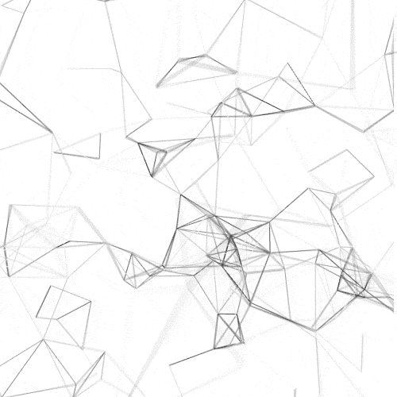
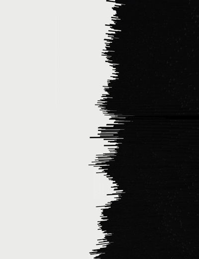
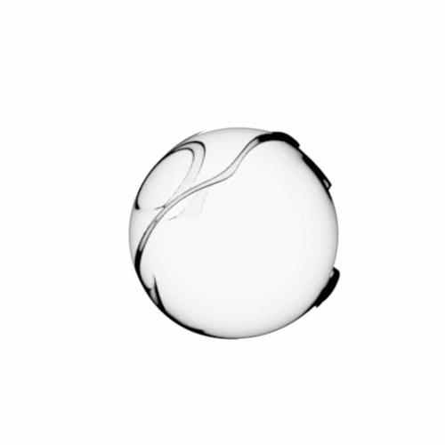

Мої контактні дані
Мобільний телефон<---------------------------------> 380972676137
Електрона Пошта<-----------------------------------> Vlad_vector@ukr.net
Вік <-------------------------------------->19 років (24.10.2003)
Бажанна заробітна плата<--------------------------------------> 20 000 грн
Громадянство<--------------------------------------> Україна
Мови<--------------------------------------> Українська - рідна, Англіська - Середнє, Турецька - До Середній рівень
Розвиток цифрової економіки призвівдо появи нових цінностей - віртуальних. Найбільш очевидними з них виступають гроші. Люди оплачують товари і послуги банківськими картами через електронні засоби зв'язку, передають криптовалюту, обмінюють одні грошові знаки на інші в цифрових обмінниках, торгують в віддаленому режимі на біржах і т.п.
Будь-яка передача цінностей - це фактично обмін даними, і якщо третя сторона зможе перехопити цю інформацію або видозмінити її, то тим самим людина або компанія зазнає цілком реальні матеріальні збитки. Щоб цього не сталося, і потрібні фахівці з безпеки інформаційних систем, які створюють надійну структуру обміну даними, передбачають дії зловмисників, знаходять і усувають уразливості в мережевих системах.
При цьому число кібератак зростає з кожним днем, як і стабільно збільшується число компаній, які переходять працювати в інтернет. За прогнозом Markets and Markets, ринок кібербезпеки до 2023 року виросте до $ 248,3 млрд. Тому проблем з пошуком високооплачуваних вакансій для фахівців з інформаційної безпеки в доступному для огляду майбутньому не передбачається.
| 
|

|
|

|